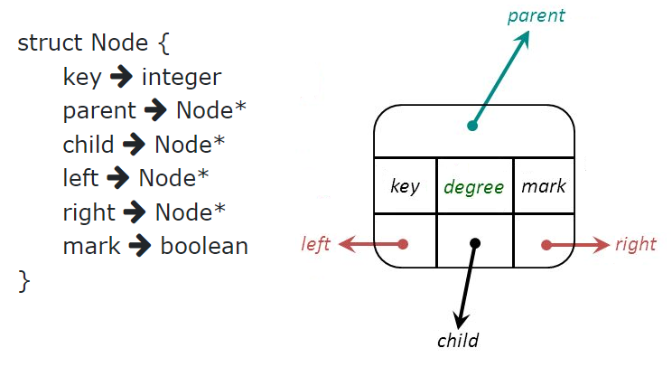
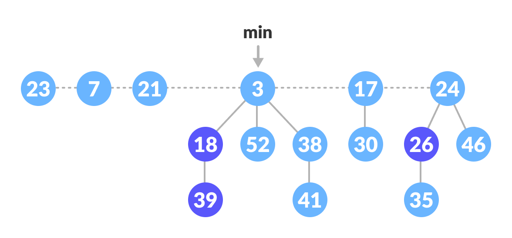
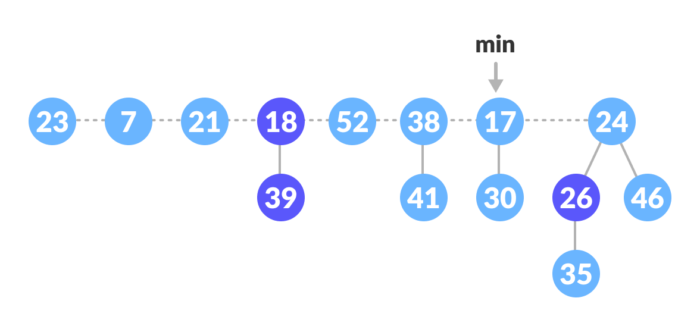
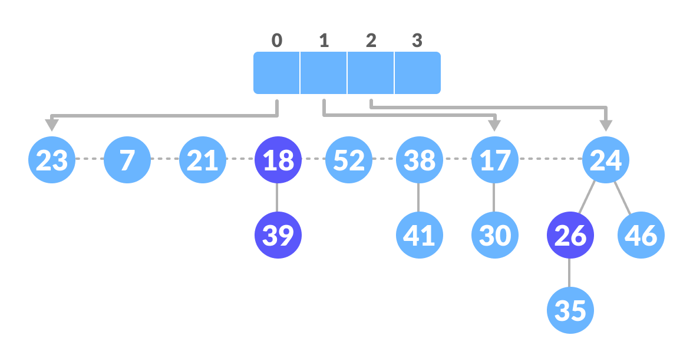
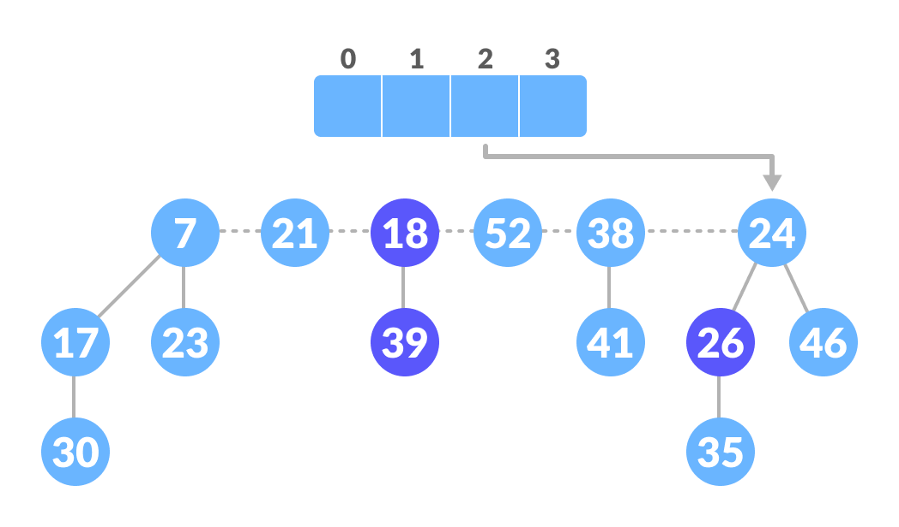
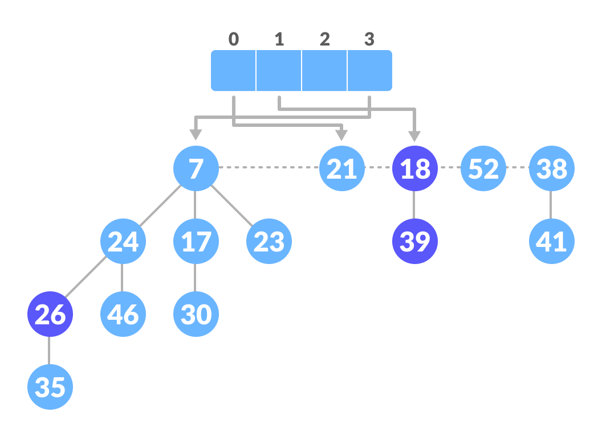
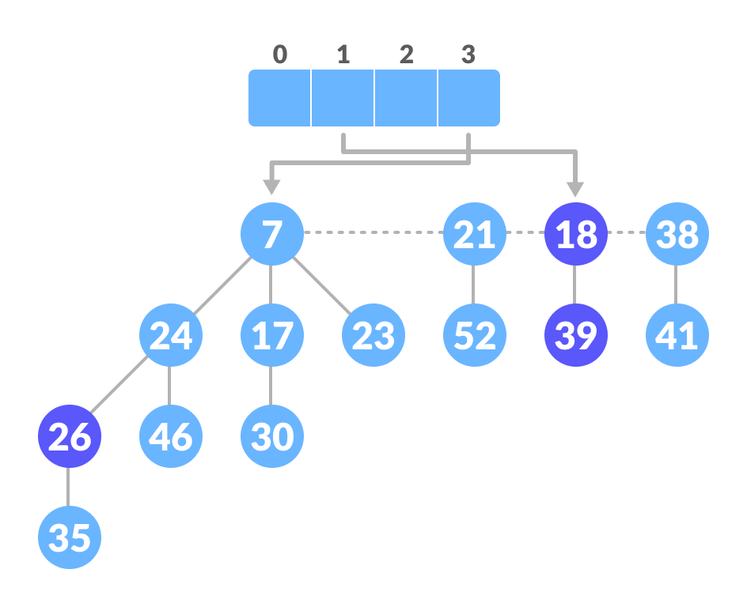
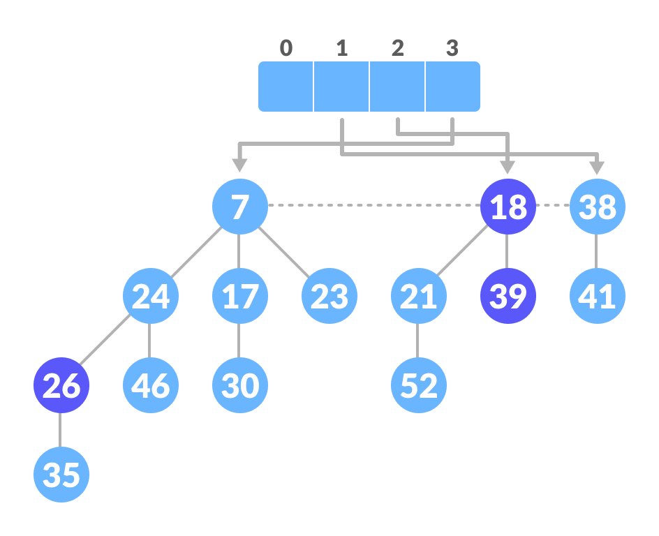

What is a Fibonacci Heap?
A fibonacci heap is a data structure that consists of a collection of trees which follow min heap or max heap property. The trees are constructed such that a tree of order n has at least Fn+2 nodes in it, where Fn+2 is the (n + 2)th Fibonacci number.

Node Structure
Structure w.r.t order
Like the binomial heap, a Fibonacci heap is a collection of heap-ordered trees. They do not need to be binomial trees however, this is where the relaxation of some of the binomial heap’s properties comes in.
Each tree has an order just like the binomial heap that is based on the number of children. Nodes within a Fibonacci heap can be removed from their tree without restructuring them, so the order does not necessarily indicate the maximum height of the tree or number of nodes it contains.

Links in Fibonacci Heap
The pointers between nodes in a Fibonacci heap are very similar to that of the binomial heap, only that each node in a Fibonacci heap contains a doubly linked list of all its children. This allows node removal and child list concatenation to both be performed in linear time.

Marked Nodes in Fibonacci Heap
An important part of the Fibonacci Heap is how it marks nodes within the trees. The decrease key operation marks a node when its child is cut from a tree, this allows it to track some history about each node. Essentially the marking of nodes allows us to track whether:
- The node has had no children cut (unmarked).
- The node has had a single child cut (marked).
- The node is about to have a second child cut (removing a child of a marked node).
When a second child is cut from its parent, the parent is moved to the root list. This ensures that the structure of the Fibonacci heap does not stray too far from that of the binomial heap, which is one of the properties that enables the data structure to achieve its amortised time bounds.
Operations on a Fibonacci Heap
Insertion Algorithm
- Create a new node for the element.
- Check if the heap is empty.
- If the heap is empty, set the new node as a root node and mark it as min.
- Otherwise, insert the node into the root list and update min.


Find Minimum Node
The minimum element is always given by the min pointer.
A pointer to minimum node of the root list is always kept up to date.

As seen here , node 3 is being pointed out . Since it is smallest node amongst all nodes present in the heap.
Union
- Concatenate the roots of both the heaps.
- Update min by selecting the minimum key from the new root lists.


Decrease Key
Extract Minimum Node
The node with minimum value is removed, and the tree is re-adjusted.
- Delete the min node.
- Set the min-pointer to the next root in the root list.
- Create an array of size equal to the maximum degree of the trees in the heap before deletion.
- Repeat until there are no multiple roots with the same degree.
- Map the degree of current root (min-pointer) to the degree in the array.
- If more than two mappings exist, apply union to maintain min-heap property.
|  |  |  |
|  |  | |
|  |  |